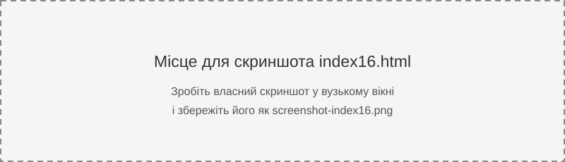

Блокові елементи починаються з нового рядка й займають доступну ширину. Вбудовані елементи займають лише місце свого вмісту.
Текст іде тут, перший span, потім текст, другий span — вони розміщуються в одному рядку, поки вистачає місця.
Зменште ширину вікна браузера та подивіться, як текст і вбудовані елементи переходять на наступні рядки.
Обов'язкова дія: зробіть скриншот сторінки у вузькому вікні браузера, збережіть його в цій теці під назвою screenshot-index16.png і додайте замість зображення-підказки нижче.
